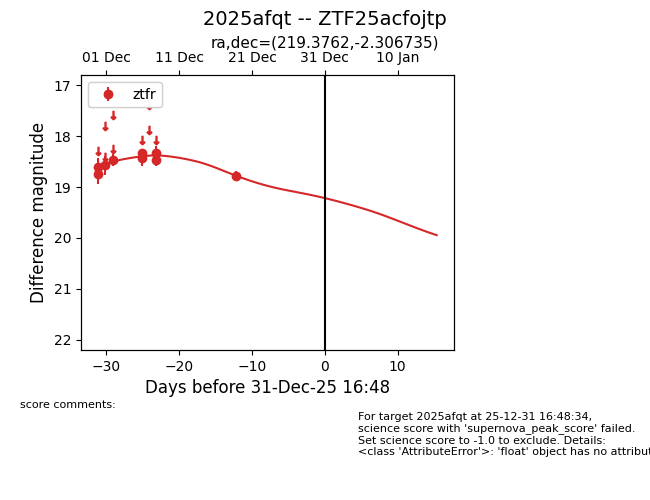
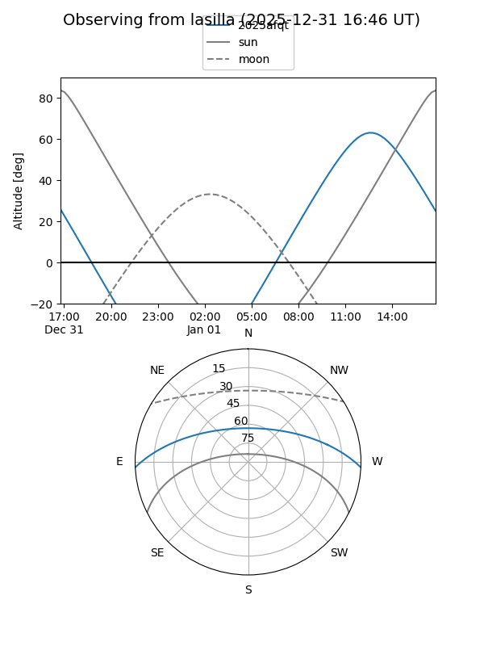
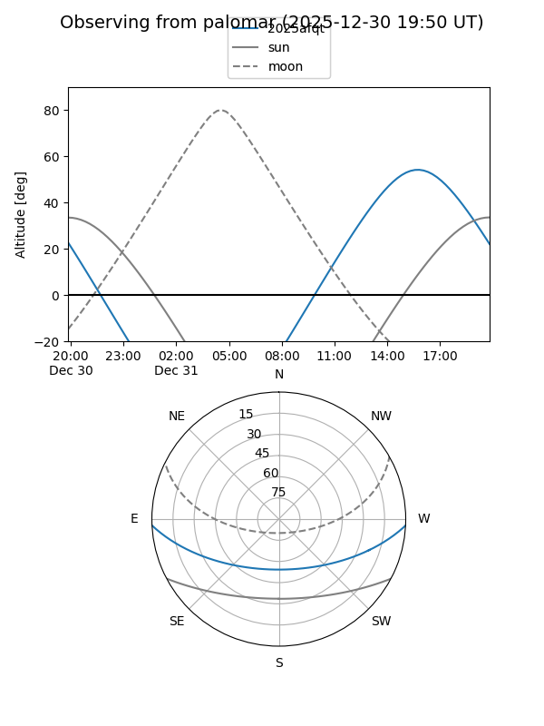
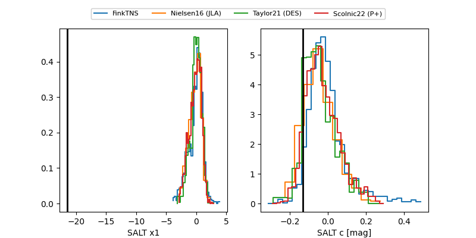

2025afqt
Target 2025afqt at 2025-12-31 18:00
Aliases and brokers:
FINK: link
Lasair: link
ALeRCE: link
TNS: link
YSE: link
alt names
ZTF25acfojtp (ztf,fink_ztf)
2025afqt (tns,yse)
Coordinates:
equatorial (ra, dec) = 219.3762,-2.30673
equatorial (HMS+DMS) = 14:37:30.30,-02:18:24.25
galactic (l, b) = (348.0988,+51.02008)
Flags:
Photometry:
last ztfr=18.78
9 ztfr detections
Lightcurve

Visibility


Additional plots
